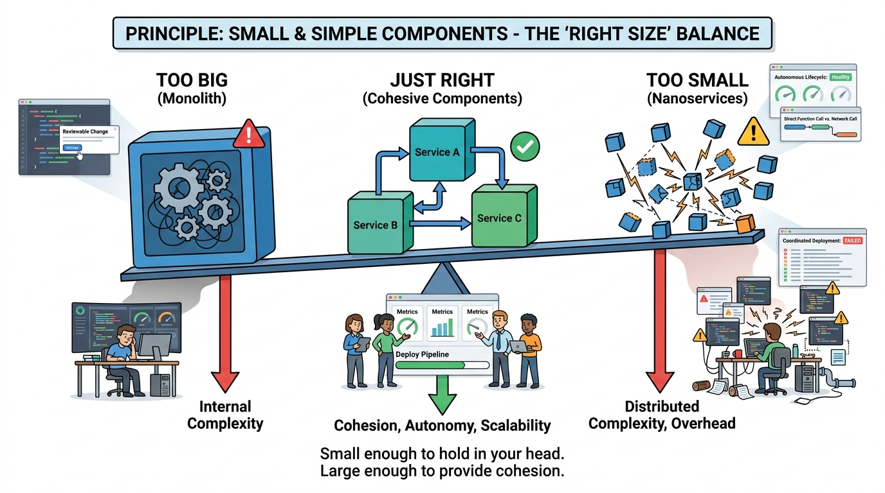

Design
Design Principle: Small (and Not Too Small) and Simple (and Not Too Simple)

Inspired by the JLP Engineering Principles 'Small and Simple' principle
Design

Inspired by the JLP Engineering Principles 'Small and Simple' principle